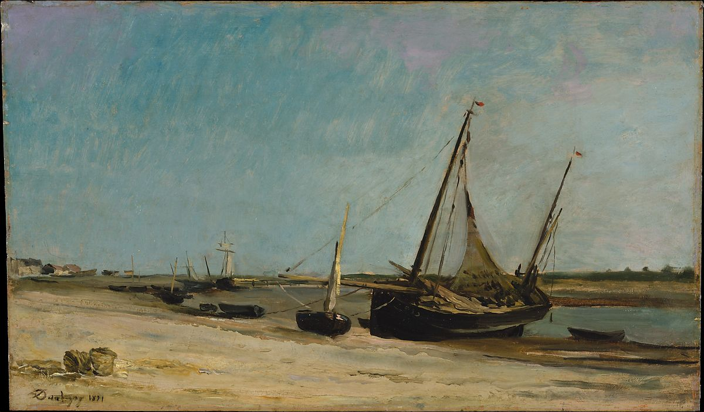

<head>
<meta charset="UTF-8" />
<meta name="keywords" content="drawing, painting" />
<meta name="description" content="drawings by Sunjy" />
<title>Sunjy</title>
<link rel="shortcut icon" type="image/x-icon" href="../../mImages/mCommon/favicon.ico" media="screen" />
<link rel="stylesheet" type="text/css" href="../../mCsses/mCommon/mCssA.css" />
<link rel="stylesheet" type="text/css" href="../../mCsses/mCommon/mCssB.css" />
<link rel="stylesheet" type="text/css" href="../../mCsses/mCommon/mCssC.css" />
<link rel="stylesheet" type="text/css" href="../../mCsses/mCommon/mCssD.css" />
<link rel="stylesheet" type="text/css" href="../../mCsses/mContent/mCssA.css" />
<link rel="stylesheet" type="text/css" href="../../mCsses/mContent/mCssB.css" />
<link rel="stylesheet" type="text/css" href="../../mCsses/mContent/mCssC.css" />
<link rel="stylesheet" type="text/css" href="../../mCsses/mContent/mCssD.css" />
</head>
<script type="text/javascript" src="../../mScripts/mContent/mContentAA.js" /></script>
<script type="text/javascript" src="../../mScripts/mContent/mContentAB.js" /></script>
<script type="text/javascript" src="../../mScripts/mContent/mContentAC.js" /></script>
<script type="text/javascript" src="../../mScripts/mContent/mContentAD.js" /></script>
<script type="text/javascript"></script> 
<script type="text/javascript">
document.write('<div class="mImgAbsolute"></div>');
/*
document.write('<p class="mFontSizeBColor" />From a white paper...</p>');
document.write('<table class="center"><tr><td>');
document.write('');
document.write('</td></tr></table>');
*/
</script>


<script type="text/javascript">
document.write('<p class="mFontSizeBColor" />Boats on the Seacoast at Etaples</p>');
document.write('<p class="mFontSizeSColor" />By Charles-Francois Daubigny, 1871. In October 1870 Daubigny and his family went to London to seek refuge from the Franco-Prussian War; this scene of beached fishing boats is thought to be the first painting he signed and dated upon his return to France in June 1871. The subject is one he had helped to popularize in the prior decade, when vanguard artists including Courbet, Jongkind, Whistler, Corot, and the young Monet also worked on the Channel coast.<br><br>Daubigny contributed Boats on the Seacoast at Étaples to an auction held in New York in 1872 to raise money for victims of the Great Chicago Fire.</p>');
document.write('<table class="center" /><tr><td>');
document.write('<br>Daubigny contributed Boats on the Seacoast at Étaples to an auction held in New York in 1872 to raise money for victims of the Great Chicago Fire." />');
document.write('</td></tr></table>');
</script>


